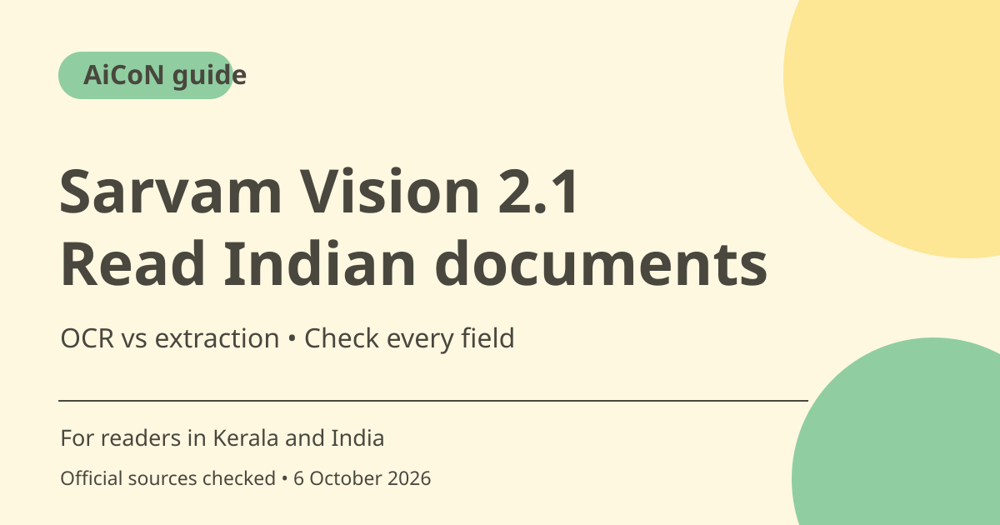

Sarvam Vision 2.1: Indic OCR, extraction and India pricing
Sarvam Vision 2.1 adds document and handwriting capabilities for Indian-language workflows. Document AI pricing lists ₹0.50 per page for digitisation and ₹1 per page for field extraction. It is primarily a dashboard/API service for developers and organisations, not unlimited free OCR.

What is Sarvam Vision 2.1?
Sarvam's September 2026 announcement describes improved table handling, key-value extraction from forms and Indic handwriting recognition. Its model documentation lists 23 languages: 22 Indian languages plus English. Treat performance and benchmark rankings as Sarvam's own claims unless independently checked on your documents.
Digitise and Extract are different tasks
Digitise converts document content to readable text while preserving structure such as tables. Extract targets fields according to a schema and can produce structured output. A transcription of a page is not the same as correctly identifying every invoice field, application answer or handwritten value. Choose the endpoint that matches the task.
Who is it useful for in Kerala and India?
A developer or organisation handling forms, archives or multilingual scans may want to reduce manual data entry. Malayalam support can be relevant, but a language being listed does not guarantee accurate reading of a particular handwriting style, damaged page or stamp. Test a representative sample and compare every important field with the original.
Input limits matter for cost and workflow
The documentation lists a maximum of ten pages per PDF or job, ten images per ZIP and a 200 MB file limit, with PDF, PNG, JPG and ZIP support. Larger documents need splitting into suitable batches. Keep page order and identifiers when splitting so extracted data can be traced back to its source.
Free credits are a trial balance
The official API-pricing page says new accounts receive free credits, then pay by the relevant billing unit. It lists Document AI digitisation at ₹0.50/page and extraction at ₹1/page. This guide does not invent a fixed trial-credit amount. Check the dashboard balance and live pricing before a production run.
Sensitive documents require review
Identity, financial, health and student records can contain private information. Obtain the required authority before uploading and review the provider's current retention and data-handling terms. Do not place API credentials in public code. AI extraction can hallucinate or misread content; use human checks for high-impact fields and keep originals.
How to use it, step by step
- Open Sarvam's official pricing and model documentation. Choose the dashboard or API route appropriate to your project.
- Check your account balance, live page rates and permitted document handling before uploading.
- Prepare a clear sample PDF or image. Split longer PDFs into batches of no more than the documented ten-page limit.
- Choose Digitise for document text and structure, or Extract for schema-based fields. Follow the current API or dashboard instructions rather than an older legacy endpoint tutorial.
- Run a small sample first. Compare the output page by page with original text, tables, handwriting and numeric values.
- Record which pages produced each extracted field. Correct errors and decide whether additional human review is required.
- Estimate the total number of pages and operation type before scaling. Monitor failed or repeated requests and confirm the final charges in the dashboard.
Cost, eligibility and limits
| Digitisation | ₹0.50 per page on the checked official Document AI pricing page. |
|---|---|
| Extraction | ₹1 per page for field extraction. The operation type changes the rate. |
| Trial | Free signup credits are documented, but the amount is not quoted here. Check the current dashboard allowance. |
| Example estimate | At listed rates, 100 pages would be ₹50 for digitisation or ₹100 for extraction, before any applicable taxes or separate operations. This is arithmetic, not a checkout quote. |
Frequently asked questions
Can I upload a 100-page PDF in one job?
The checked docs cap a PDF/job at ten pages. Split it into supported batches and preserve page references.
Is extraction the same price as OCR?
No. Checked pricing lists ₹0.50/page for digitisation and ₹1/page for extraction.
Does listed language support guarantee accuracy?
No. Test representative samples and verify important fields manually.
Official sources
Checked 6 October 2026. Features and prices can change. This is a guide, not a personal product test.